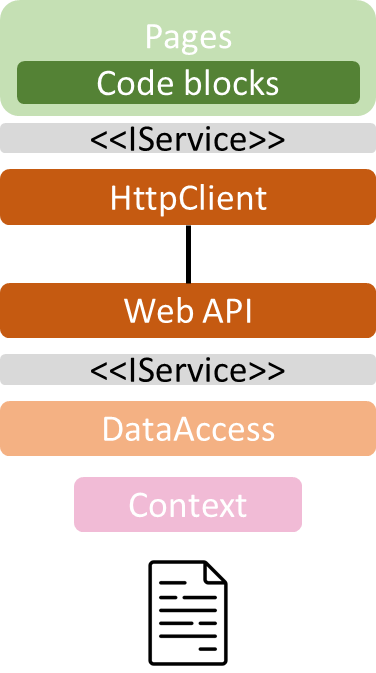
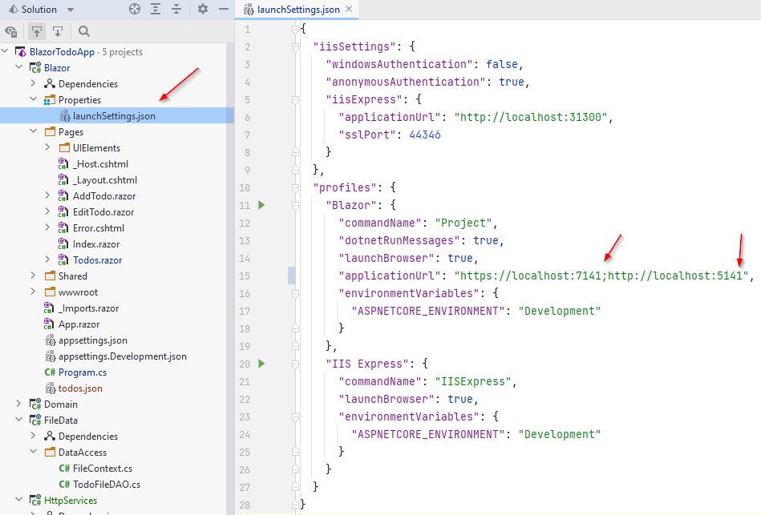
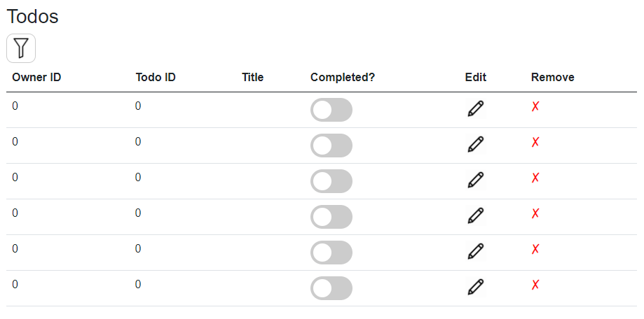

- 1 Introduction
- 2 Setup
- 3 Todo client
- 4 Get all todos
- 5 Test all todos
- 6 Add todo
- 7 Other methods
- 8 Closing notes
- 9 Optimization
Introduction
The first part of this series of tutorials had you do a Blazor app. We then, in part 2, made a Web API, which can CRUD Todo items.
In this part, we will make a layer of HttpClients, which the Blazor app can use to retrieve data from the Web API.
The code for this tutorial is found in this branch
Layers
After this tutorial, your application will have the following layers:

Notice that <<IService>> interfaces are the same in both interface layers. That means, you have an ITodoHome interface, which is implemented by both your TodoFileDAO class, and a new (not yet created) TodoClient class.
We must add a new component to our project, it must be a Class Library project. In the below diagram, it is called HttpServices.

The above diagram is not complete, it focuses on the components of the application.
Initial Setup
Clean up
The class library comes with a dummy class, Class1. Delete it.
If you have both users and todos, you may go ahead and create a directory for each, to contain the HttpClient classes: TodoClients and UserClients.
Adding Dependencies
- Your HttpServices component must depend on Domain component, so that we can access the interfaces.
- The Blazor component must depend on HttpServices.
Removing Dependencies
This is a bit trickier.
You must switch to File System:

And open up a file in Blazor component: Blazor.csproj.
This is a settings file, containing various information about the project. Among other things:
- Version of .NET
- Whether nullable checks are enabled
- Dependencies
You should see the following block:
<ItemGroup>
<ProjectReference Include="..\Domain\Domain.csproj" />
<ProjectReference Include="..\FileData\FileData.csproj" />
<ProjectReference Include="..\HttpServices\HttpServices.csproj" />
</ItemGroup>
We wish to remove dependencies to FileData, so remove the highlighted line. Save. Close file. Switch back to Solution view, see above screenshot.
It is preferable to be strict about dependencies, so you don't by accident use classes you're not supposed to use.
Your Blazor.Program.cs now complains, because it cannot see classes in FileData, which you are adding as services. That is okay, we'll change that shortly.
Todo Client
Create a new class, TodoHttpClient.
Make it implement the ITodoHome interface from Domain. Auto-implement the methods.
Your class should now look like:
public class TodoHttpClient : ITodoHome
{
public Task<ICollection<Todo>> GetAsync()
{
throw new NotImplementedException();
}
public Task<Todo> GetByIdAsync(int id)
{
throw new NotImplementedException();
}
public Task<Todo> AddAsync(Todo todo)
{
throw new NotImplementedException();
}
public Task DeleteAsync(int id)
{
throw new NotImplementedException();
}
public Task UpdateAsync(Todo todo)
{
throw new NotImplementedException();
}
}
Your interface may look different, if you have implemented a method, which can get a filtered list of Todos. E.g. filtering by completed status, or user-id.
We will implement the methods in the order of their usage in the app, sort of. That means starting with the GetAsync() method.
Register as service
Currently, your Blazor app is using the TodoFileDAO class. That's no longer feasible, as we instead wish to get data from some "remote" Web API (which is just running locally. But it's a separate process).
Open the Program.cs file of Blazor component.
Modify the line where you register a scoped ITodoHome:
builder.Services.AddScoped<FileContext>();
builder.Services.AddScoped<ITodoHome, TodoFileDAO>();
The above two lines must instead be just:
builder.Services.AddScoped<ITodoHome, TodoHttpClient>();
Get All Todos
The implementation of the method GetAsync() looks like this:
public async Task<ICollection<Todo>> GetAsync()
{
using HttpClient client = new ();
HttpResponseMessage response = await client.GetAsync("https://localhost:7204/todos");
string content = await response.Content.ReadAsStringAsync();
if (!response.IsSuccessStatusCode)
{
throw new Exception($"Error: {response.StatusCode}, {content}");
}
ICollection<Todo> todos = JsonSerializer.Deserialize<ICollection<Todo>>(content)!;
return todos;
}
First, an HttpClient is created.
Then a request is made, asynchronously, to the Web API, using the URI: "https://localhost:7204/todos". Your URI may look different.
The content of the message is read, this will either be an error message, or the collection of Todos as json.
The response contains a status code, which will indicate the success-status of the request. If something went wrong, an exception is thrown with the content, which should be an error message.
Again, it is important to display feedback to the user, in case of errors.
Otherwise, the json is de-serialized into a collection of Todos and returned.
This would be a good place to test things.
Testing
Setup
Now, the URI which your Web API and Blazor app is running on, is sometimes the same. Given the fact that you can only have on process bound to a specific port at a time, if you try to run both, you'll get an error.
We'll need to change the port for one of the programs. Maybe it isn't a problem for you, so you could just try and run both and see if it works. If not, read below:
We'll change Blazor, as we hardcoded the port into the TodoHttpClient class.
Navigate to the file "Blazor/Properties/launchSettings.json". This is a configuration file.
There is a profiles section, which contains "Blazor" and "IIS Express". We NEVER want to tough IIS Express in this course.
In the Blazor section, there is a setting for the "applicationUrl". Change the ports slightly, in my case they are currently 7140 and 5140, for https and http, respectively. I change them to 7141 and 5141.
Result:

Note
You may also notice a setting
"launchBroewser": true,
If this is set to "false", a new browser tab will not open each time you run the project. Instead, you might click on the URI in the console to open the app.
I find this useful, because sometimes I'll end up with many duplicate tabs open.
Test
Now, go ahead and start the Web API, it opens swagger, but you can just close that again.
Next up, start Blazor.
Open the page for viewing all todos, and what do we see? I get this:

So, that looks iffy. I do get a number of rows equal to the number of Todos I have in my file. But no data.
The Fix
This is because a .NET Web API returns json formatted with camelCase, like so:
[
{
"id": 1,
"ownerId": 1,
"title": "Dishes",
"isCompleted": false
},
{
"id": 1,
"ownerId": 1,
"title": "Walk the dog",
"isCompleted": false
}
]
Notice the attribute names are starting with lower case.
However, by default, the JsonSerializer utility class will look for properties with exact matching name, but in C# we use PascalCase for naming properties, and the JsonSerializer will not find matches.
To fix this, we need to add an option to the DeSerialize<>() method, like so:
public async Task<ICollection<Todo>> GetAsync()
{
using HttpClient client = new ();
HttpResponseMessage response = await client.GetAsync("https://localhost:7204/todos");
string content = await response.Content.ReadAsStringAsync();
if (!response.IsSuccessStatusCode)
{
throw new Exception($"Error: {response.StatusCode}, {content}");
}
ICollection<Todo> todos = JsonSerializer.Deserialize<ICollection<Todo>>(content, new JsonSerializerOptions
{
PropertyNameCaseInsensitive = true
})!;
return todos;
}
Test again, it should work now. This is also relevant when sending JSON between C# and Java.
Add Todo
Next up, we want to be able to add a new Todo, so we must implement the relevant method in the TodoHttpClient class.
The AddAsync() method looks like this:
public async Task<Todo> AddAsync(Todo todo)
{
using HttpClient client = new();
string todoAsJson = JsonSerializer.Serialize(todo);
StringContent content = new(todoAsJson, Encoding.UTF8, "application/json");
HttpResponseMessage response = await client.PostAsync("https://localhost:7204/todos", content);
string responseContent = await response.Content.ReadAsStringAsync();
if (!response.IsSuccessStatusCode)
{
throw new Exception($"Error: {response.StatusCode}, {responseContent}");
}
Todo returned = JsonSerializer.Deserialize<Todo>(responseContent, new JsonSerializerOptions
{
PropertyNameCaseInsensitive = true
})!;
return returned;
}
Again, an HttpClient is created.
The argument-Todo is serialized to json. That is then wrapped into a StringContent class, along with the encoding, and the format.
The client is used to make a POST request, to the URI, with the StringContent object. This gets a response back.
We check the status code, and if an error occured, an exception is thrown, to be caught by the UI so a message can be shown to the user.
If no errors happened, the content of the response is deserialized into the finalized Todo object. It now has an ID, in case we need that for anything.
The result Todo is returned.
Test
Run things again, go and create a new Todo and verify it shows up in the overview.
Other Methods
We still need three (at least) methods implemented:
- Get Todo by id
- Delete Todo by id
- Update Todo by id
Give them a go by yourself, test along the way.
I suggest you start with Delete, then Get, then Update. That makes it easier to test.
If you implemented the blazor-component modal to update a Todo, then the GetByID method may not be needed.
Remember, you can see my solution in this branch.
Test by making modifications, and either refreshing or opening another page and go back again to verify then changes stuck.
The End
If you have implement support for users, you'll need another class to manage that, similar to the TodoHttpClient.
This class should (among other things) be able to GET and POST users.
From the Login tutorial, you might have an IUserService interface. This is the interface, which implementation must be replaced by a new class. The AuthService still belongs to the Blazor project, however.
The next step, in another tutorial, will be to add a database to the application, using Entity Framework Core.
Optimization
Currently, when you open the Todos overview in the Blazor app, all Todos are initially loaded.
This does not scale well. If you have thousands, or more, Todos in your data storage, the initial load will be very large.
The next step will rework this. The idea is to introduce a search button, so nothing is initially loaded, but instead only per the request of the user, i.e. on button click.
The user may choose to load everything, or apply various filters before loading data.
Your task is then to implement this idea:
- Nothing is initially loaded
- Introduce a button
- Search parameters (if any) are sent to the Web API
- Web API is now responsible for returning the (filtered, if applicable) result